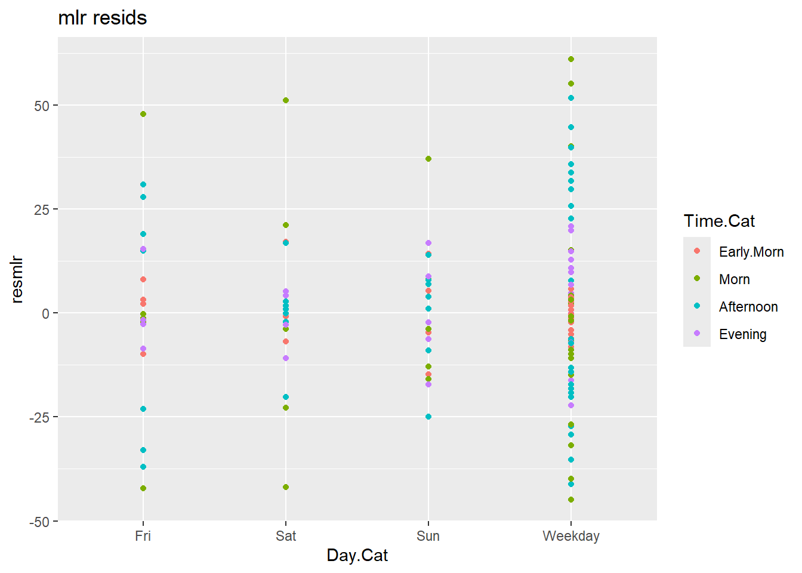
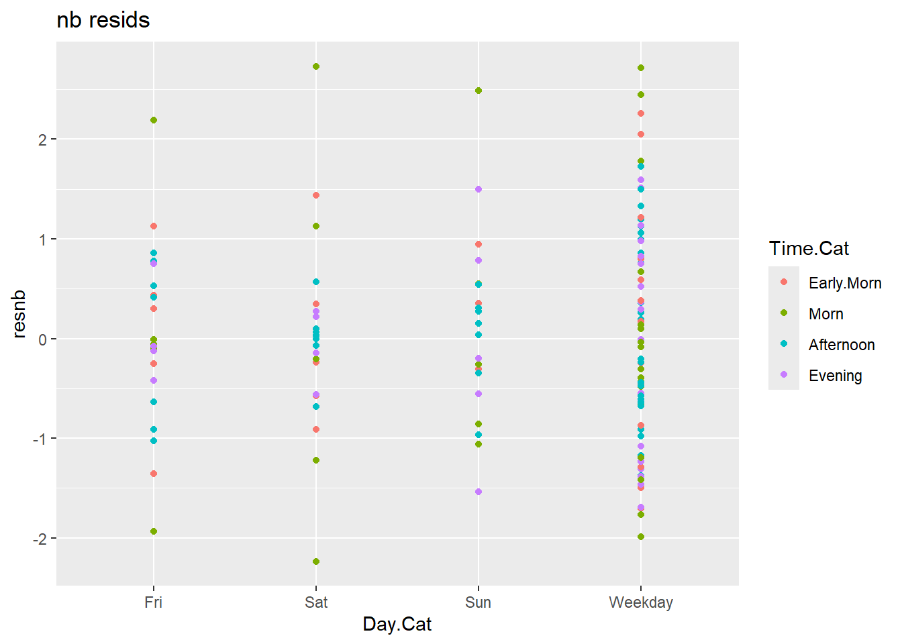

data(crashi)
hour <- rownames(crashi) ## grab the hours
crashi2 <- stack(crashi) ## combine 7 columns of crashes into 1
names(crashi2) <- c("Count","Day")
crashi2$Day <- factor(crashi2$Day,levels(crashi2$Day)[c(2,6,7,5,1,3,4)]) # make sure the days are ordered correctly
crashi2$Hour <- as.numeric(rep(hour, ncol(crashi)))
crashi2 <- crashi2 |> mutate(
Day.Cat = ifelse(
(Day != "Fri" & Day != "Sat" & Day != "Sun"), "Weekday", as.character(Day)
),
Time.Cat = cut(Hour,
breaks = c(-1, 5.5, 11.5, 18.5, 25),
labels = c("Early.Morn", "Morn", "Afternoon", "Evening"))
)ST-518 HW 8
output: pdf_document
R Question
1. Consider the crashi data
(5 points) Consider the crashi data in the VGAM library that we examined in Lab. Sometimes people will fit multiple linear regression models to data like this, not recognizing that the responses are counts.
(a) Fit a multiple linear regression
Using the Time.Cat and Day.Cat variables that we created in Lab, fit a multiple linear regression model to the counts. Be sure to include the interaction between Time.Cat and Day.Cat just as we did in the lab.
How does the model fit compare to the negative binomial regression model that you fit in lab? Please explain.
mod.mlr <- glm(
Count ~ Day.Cat * Time.Cat,
data = crashi2,
)
mod.nb <- glm.nb(
Count ~ Day.Cat * Time.Cat,
data = crashi2
)summary(mod.mlr)
Call:
glm(formula = Count ~ Day.Cat * Time.Cat, data = crashi2)
Coefficients:
Estimate Std. Error t value Pr(>|t|)
(Intercept) 20.833 8.528 2.443 0.015719 *
Day.CatSat 17.000 12.061 1.410 0.160729
Day.CatSun 28.833 12.061 2.391 0.018044 *
Day.CatWeekday -8.667 9.535 -0.909 0.364827
Time.CatMorn 53.333 12.061 4.422 1.85e-05 ***
Time.CatAfternoon 106.167 11.622 9.135 3.87e-16 ***
Time.CatEvening 48.767 12.650 3.855 0.000170 ***
Day.CatSat:Time.CatMorn -28.333 17.057 -1.661 0.098751 .
Day.CatSun:Time.CatMorn -54.167 17.057 -3.176 0.001810 **
Day.CatWeekday:Time.CatMorn 11.333 13.485 0.840 0.401967
Day.CatSat:Time.CatAfternoon -40.857 16.436 -2.486 0.014009 *
Day.CatSun:Time.CatAfternoon -66.833 16.436 -4.066 7.65e-05 ***
Day.CatWeekday:Time.CatAfternoon -14.119 12.994 -1.087 0.278944
Day.CatSat:Time.CatEvening -21.800 17.889 -1.219 0.224883
Day.CatSun:Time.CatEvening -63.233 17.889 -3.535 0.000541 ***
Day.CatWeekday:Time.CatEvening -18.783 14.143 -1.328 0.186128
---
Signif. codes: 0 '***' 0.001 '**' 0.01 '*' 0.05 '.' 0.1 ' ' 1
(Dispersion parameter for gaussian family taken to be 436.4019)
Null deviance: 255316 on 167 degrees of freedom
Residual deviance: 66333 on 152 degrees of freedom
AIC: 1515.1
Number of Fisher Scoring iterations: 2# summary(mod.mlr)
summary(mod.nb)
Call:
glm.nb(formula = Count ~ Day.Cat * Time.Cat, data = crashi2,
init.theta = 13.71581333, link = log)
Coefficients:
Estimate Std. Error z value Pr(>|z|)
(Intercept) 3.03655 0.14196 21.391 < 2e-16 ***
Day.CatSat 0.59664 0.19159 3.114 0.001845 **
Day.CatSun 0.86878 0.18883 4.601 4.21e-06 ***
Day.CatWeekday -0.53785 0.16314 -3.297 0.000977 ***
Time.CatMorn 1.26976 0.18588 6.831 8.42e-12 ***
Time.CatAfternoon 1.80763 0.17802 10.154 < 2e-16 ***
Time.CatEvening 1.20621 0.19392 6.220 4.97e-10 ***
Day.CatSat:Time.CatMorn -0.76247 0.25673 -2.970 0.002979 **
Day.CatSun:Time.CatMorn -1.28668 0.25617 -5.023 5.09e-07 ***
Day.CatWeekday:Time.CatMorn 0.57318 0.21117 2.714 0.006642 **
Day.CatSat:Time.CatAfternoon -0.80471 0.24505 -3.284 0.001024 **
Day.CatSun:Time.CatAfternoon -1.22433 0.24335 -5.031 4.88e-07 ***
Day.CatWeekday:Time.CatAfternoon 0.34012 0.20273 1.678 0.093415 .
Day.CatSat:Time.CatEvening -0.66810 0.26801 -2.493 0.012675 *
Day.CatSun:Time.CatEvening -1.55050 0.27088 -5.724 1.04e-08 ***
Day.CatWeekday:Time.CatEvening 0.03632 0.22114 0.164 0.869524
---
Signif. codes: 0 '***' 0.001 '**' 0.01 '*' 0.05 '.' 0.1 ' ' 1
(Dispersion parameter for Negative Binomial(13.7158) family taken to be 1)
Null deviance: 880.82 on 167 degrees of freedom
Residual deviance: 172.14 on 152 degrees of freedom
AIC: 1439.5
Number of Fisher Scoring iterations: 1
Theta: 13.72
Std. Err.: 1.93
2 x log-likelihood: -1405.533 MLR model:
For a linear regression where there are only factors, the betas are all dummy variables.
\(\mu(Y|Day, Time) = \beta_0 + \beta_1Weekday + \beta_2Fri + \beta_3Sat +\) \(\beta_4Sun + \beta_5Early.Morn + \beta_6Morn + \beta_7Afternoon + \beta_8Evening + interactions\)
Negative Binomial:
For the negative binomial, it approaches a poisson model as dispersion approaches 1.
\(log(\lambda_i) = \beta_0 + \beta_1Weekday + \beta_2Fri + \beta_3Sat +\) \(\beta_4Sun + \beta_5Early.Morn + \beta_6Morn + \beta_7Afternoon + \beta_8Evening + interactions\)
Mean and variance are equal to lambda. So,
summary(mod.mlr)$coefficients[1:16] [1] 20.833333 17.000000 28.833333 -8.666667 53.333333 106.166667
[7] 48.766667 -28.333333 -54.166667 11.333333 -40.857143 -66.833333
[13] -14.119048 -21.800000 -63.233333 -18.783333summary(mod.nb)$coefficients[1:16] [1] 3.03655427 0.59663628 0.86877975 -0.53785430 1.26976054 1.80763282
[7] 1.20621030 -0.76246537 -1.28668142 0.57317806 -0.80470838 -1.22433047
[13] 0.34011643 -0.66809524 -1.55049823 0.0363244120.833333 + 17.000000[1] 37.83333exp(3.03655427+0.59663628)[1] 37.83333Above showed that due to the structure of the data, these two methods are getting the same coefficients. However, the negative binomial(nb) model is a better fit for the data. The dispersion parameter for the nb is much lower. The data clearly do not come from a normal distribution as is assumed by the multiple linear regression.
c2 <- crashi2
c2$resmlr <- residuals(mod.mlr)
c2$resnb <- residuals(mod.nb, type = "pearson")
c2$fitmlr <- mod.mlr$fitted.values
c2$fit.nb <- mod.nb$fitted.valuesggplot(c2) +
aes(x = Day.Cat, y = resmlr, colour = Time.Cat) +
geom_point() +
labs(title = "mlr resids")
ggplot(c2) +
aes(x = Day.Cat, y = resnb, colour = Time.Cat) +
geom_point() +
labs(title = "nb resids")

Looking at the residuals, it is clear that the nb model is much better. The mlr model has residuals as high as 50, compared to the 2 or 3 from the nb.
(b) Compare the predicted number of crashes
Now compare the predicted number of crashes in the early morning on Saturdays using your model from part (a) and the negative binomial model from the Lab. Are they the same? Different?
newdat <- data.frame(Day.Cat = "Sat", Time.Cat = "Early.Morn")
## predict using Poisson regression and NB regression
predict(mod.mlr, newdata = newdat, type = "response") 1
37.83333 predict(mod.nb, newdata = newdat, type = "response") 1
37.83333 c2$predmlr <- predict(mod.mlr, c2)
c2$prednb <- predict(mod.nb, c2, type = "response")
(sum(near(c2$predmlr, c2$prednb, tol = .0000000000001))/length(c2$prednb))*100[1] 14.88095Not only are the estimates for Saturday morning close, but all of them are close. They are 100% similar within 1 x 10^-12, and for the reasons I explained in part a.
(c) Examine the standard errors
Now examine the standard errors associated with the predictions from part (b). Are they the same? Different? Which model do you prefer? Please explain.
## manually doing the back transformation
predict(mod.mlr, newdata = newdat, type = "response", se.fit = TRUE)$fit
1
37.83333
$se.fit
[1] 8.528403
$residual.scale
[1] 20.89023predict(mod.nb, newdata = newdat, type = "response", se.fit = TRUE)$fit
1
37.83333
$se.fit
1
4.868124
$residual.scale
[1] 1I am not sure how these homework assignments work in gradescope, but I answered all of these questions in part a. The question about comparing model fit was general enough that I thought I was supposed to answer all these questions.
The SE for the mlr is higher than for the nb, but the nb fits the data better. Referring to the residual plot in part a, you can see that the mlr was scattered about wildly. The residual scale above shows that the standard deviation of the residuals is much higher for the mlr.
Conceptual Question
2. Issues with large datasets
(5 points) Please find an article or web posting in which the authors discuss the statistical issues with large datasets. Write a short paragraph in which you identify at least one of the issues that the authors raise. Also please comment on whether you agree with or disagree with their assessment. Please submit either a PDF copy of the article you read, or a web link to the article or post.
The article is Fan, Jianqing, Fang Han, and Han Liu. “Challenges of big data analysis.” National science review 1.2 (2014): 293-314.
Challenges of big data analysis pdf
https://academic.oup.com/nsr/article/1/2/293/1397586
The authors speak of Noise accumulation on page 6. To summarize in part, classification can be obfuscated by many weak predictors that do not reduce classification error. If a dataset has 200 predictors but only 2 are really useful, the noise added by the other 198 is enough to ruin the classification. Noise accumulation makes variable selection important, but due to “spurious correlations” it can be more difficult with big data. Spurious correlations are when variables are correlated for no apparent reason. It leads to associating selected variables that are not relevant. The presence of spurious variables also impacts inference, variance tends to be seriously underestimated. Finally, Incidental endogeneity is when some predictors correlate with noise.
This is a pretty long article and I do not have time to read the whole thing now. However, I have been stuck at work while trying to predict the types of trees that will regenerate in forests with and without different types of disturbance. I have known that I have all of these issues, even though I didn’t know they had names. There are many things that could be predictive of forest type, but they are all weak and there is a lot of noise. I very much agree with the authors that these are problems when dealing with big data. I have been working with a random forests model, and hoping that I could fix some other issues that would help my model. I am excited to read the rest of this paper and do some more digging. I have zero-inflation, over dispersion, noise accumulation, and indcidental endogeneity in my dataset.